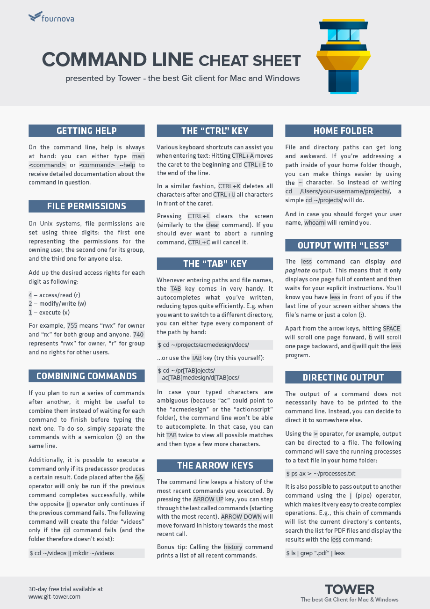

TASK 1 Command Line
In your reflection file, answer the following questions:
- How would you describe the command line in plain English in a couple of
sentences?
A word driven finder that is faster when you can get the hang of it.
Reduces the amount of visual sifting required when using finder and
side clicking tasks.
- Can you think of an analogy for it?
Managing the computers tasks in a birds eye view, instead of being the
minion carrying out each find and commit job, or perhaps having the
camera in manual mode instead of auto (even thoughy most people find
in more intuitive).
- Did you stick to the timebox guidelines? If not, what change would you
make next time?
I think I did though not particularly intentionally, as pressure to
learn 'on time' doesnt help me learn at all, so I see how long is
expected then go with the flow around that general suggestion.
- Name five commands you used and what they do.
cd, change directory(jump into a folder)
cd .. go back out (or up) as they say, from where you are or what
folder you are in.
ls: List the contents of the directory you are currently in.
mv: move or rename the directory of your specification.
pwd: Lets you know where you are located in the Terminal.
- Did you learn anything unexpected?
That there isnt as much weirdness and commands to learn here as I
thought, and that sudo is very useful to prove to my machine that I am
the boss. Also so amny many many failures to troubleshoot when
installing things and therefore commands not working oml how does
anyone do this alone.
A word driven finder that is faster when you can get the hang of it.
Reduces the amount of visual sifting required when using finder and
side clicking tasks.
Managing the computers tasks in a birds eye view, instead of being the
minion carrying out each find and commit job, or perhaps having the
camera in manual mode instead of auto (even thoughy most people find
in more intuitive).
I think I did though not particularly intentionally, as pressure to
learn 'on time' doesnt help me learn at all, so I see how long is
expected then go with the flow around that general suggestion.
cd, change directory(jump into a folder)
cd .. go back out (or up) as they say, from where you are or what folder you are in.
ls: List the contents of the directory you are currently in.
mv: move or rename the directory of your specification.
pwd: Lets you know where you are located in the Terminal.
cd .. go back out (or up) as they say, from where you are or what folder you are in.
ls: List the contents of the directory you are currently in.
mv: move or rename the directory of your specification.
pwd: Lets you know where you are located in the Terminal.
That there isnt as much weirdness and commands to learn here as I
thought, and that sudo is very useful to prove to my machine that I am
the boss. Also so amny many many failures to troubleshoot when
installing things and therefore commands not working oml how does
anyone do this alone.

|
 |
|---|
TASK 2 Git/Github
In your reflection file, answer the following questions:
- What's the difference between Git and GitHub? Github in a server that sores repositories worked on by many different people possibly. Git is where you can clone resiories and work on them locally before pushing or pullings/merging others changes from the online github server. This also means it is harder to lose repository files when everyone has a clone on their local Git
- Can you think of an analogy to describe them? Hmm, liiiike taking photocopies of a drawings, then drawing on the drawing, and if you like the additions you can propose to make it the orgin drawing for others to photocopy.
-
Do you think you would still remember the difference a week from now
if you didn't revisit the material? I have been using Git/Github for a while now, so yes...
- Did you stick to the timebox suggestions? If not, why not? I was a bit faster because I am already familiar, yes still did some research especially on the command line uses for Github as I am more familiar withthe desktop application.
Github in a server that sores repositories worked on by many different people possibly. Git is where you can clone resiories and work on them locally before pushing or pullings/merging others changes from the online github server. This also means it is harder to lose repository files when everyone has a clone on their local Git
Hmm, liiiike taking photocopies of a drawings, then drawing on the drawing, and if you like the additions you can propose to make it the orgin drawing for others to photocopy.
I have been using Git/Github for a while now, so yes...
I was a bit faster because I am already familiar, yes still did some research especially on the command line uses for Github as I am more familiar withthe desktop application.